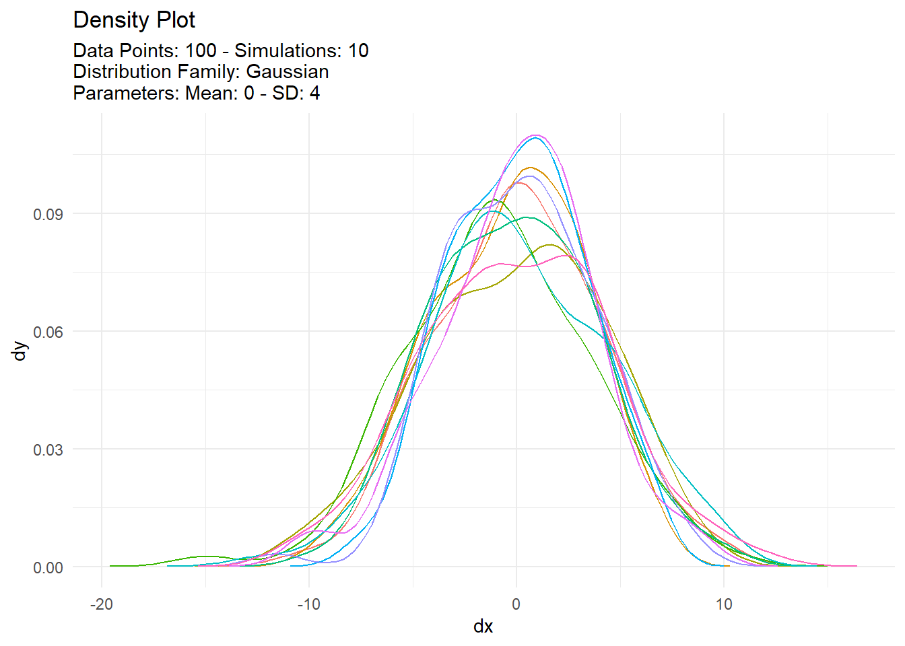
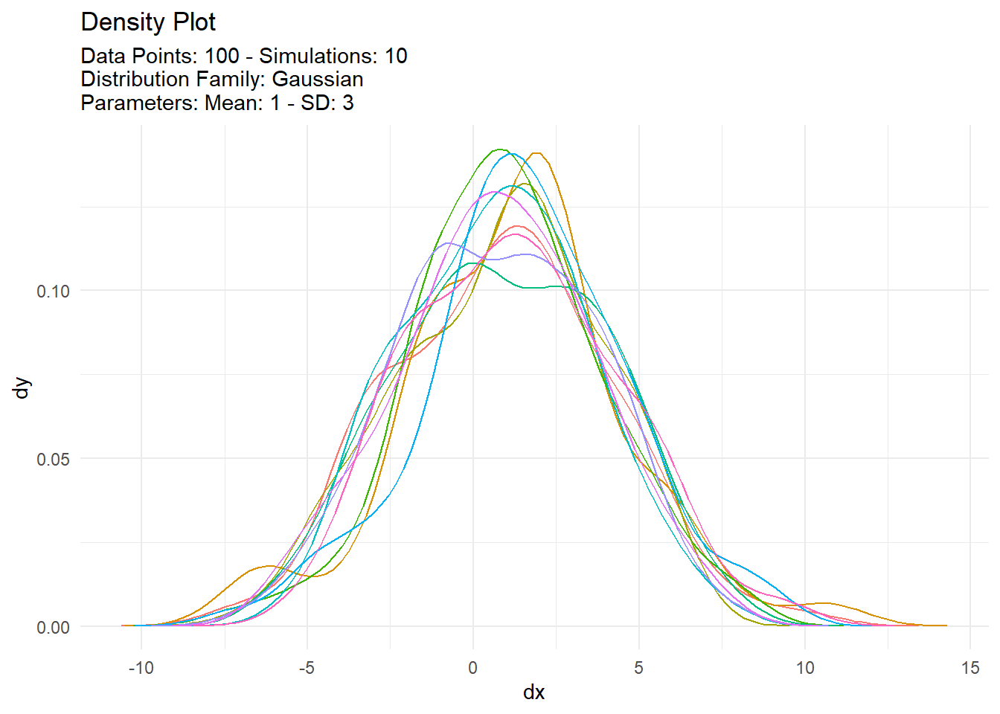
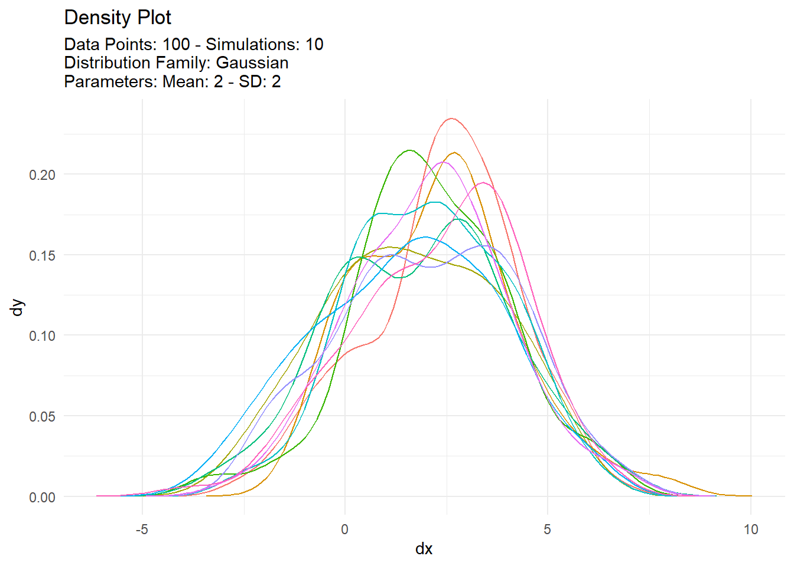
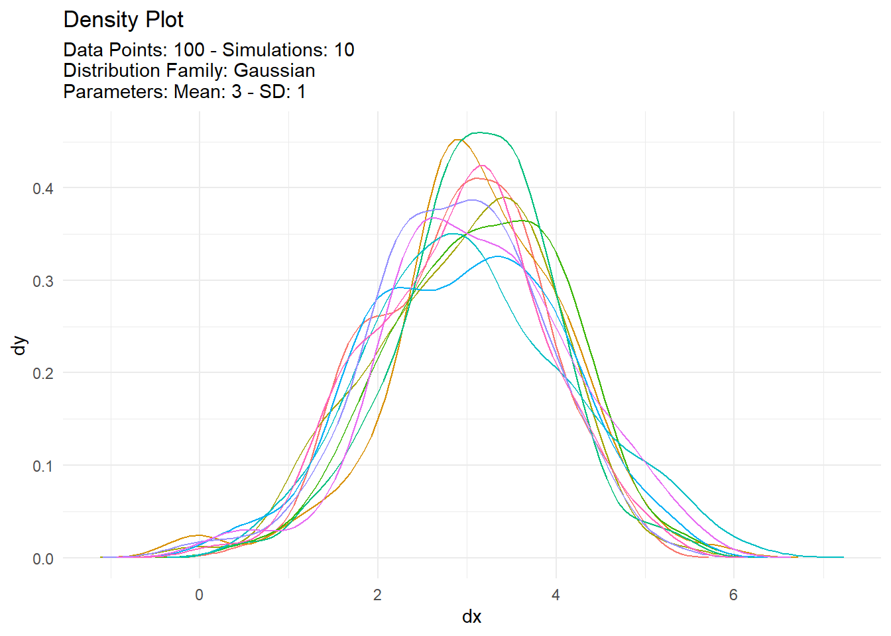

pmap(.l, .f, ...)Introduction
The pmap() function in R is part of the purrr library, which is a package designed to make it easier to work with functions that operate on vectors, lists, and other types of data structures.
The pmap() function is used to apply a function to a list of arguments, where each element in the list contains the arguments for a single function call. The function is applied in parallel, meaning that each call is executed concurrently, which can help speed up computations when working with large datasets.
Here is the basic syntax of the pmap() function:
where:
.l- is a list of arguments, where each element of the list contains the arguments for a single function call..f- is the function to apply to the arguments in .l....- is used to pass additional arguments to .f.
The pmap() function returns a list, where each element of the list contains the output of a single function call.
Let’s define a function for an example.
Function
my_function <- function(a, b, c) {
# do something with a, b, and c
return(a + b + c)
}A very simple function that just adds up the elements passed.
Now let’s go over a couple simple examples.
Example
library(purrr)
library(TidyDensity)
# create a list of vectors with your arguments
my_args <- list(
c(1, 2, 3),
c(4, 5, 6),
c(7, 8, 9)
)
# apply your function to each combination of arguments in parallel
results <- pmap(my_args, my_function)
# print the results
print(results)[[1]]
[1] 12
[[2]]
[1] 15
[[3]]
[1] 18Now lets see a couple more examples.
argsl <- list(
c(100, 100, 100, 100), # this is .n
c(0,1,2,3), # this is .mean
c(4,3,2,1), # this is .sd
c(10,10,10,10) # this is .num_sims
)
pmap(argsl, tidy_normal)[[1]]
# A tibble: 1,000 × 7
sim_number x y dx dy p q
<fct> <int> <dbl> <dbl> <dbl> <dbl> <dbl>
1 1 1 3.56 -15.0 0.0000353 0.814 3.56
2 1 2 -0.433 -14.6 0.0000679 0.457 -0.433
3 1 3 -1.93 -14.3 0.000125 0.315 -1.93
4 1 4 1.68 -14.0 0.000219 0.663 1.68
5 1 5 4.18 -13.7 0.000369 0.852 4.18
6 1 6 0.805 -13.4 0.000596 0.580 0.805
7 1 7 7.99 -13.1 0.000922 0.977 7.99
8 1 8 -1.61 -12.8 0.00137 0.344 -1.61
9 1 9 1.83 -12.5 0.00195 0.676 1.83
10 1 10 6.66 -12.1 0.00267 0.952 6.66
# … with 990 more rows
[[2]]
# A tibble: 1,000 × 7
sim_number x y dx dy p q
<fct> <int> <dbl> <dbl> <dbl> <dbl> <dbl>
1 1 1 -0.335 -9.02 0.0000814 0.328 -0.335
2 1 2 2.00 -8.82 0.000162 0.630 2.00
3 1 3 -0.238 -8.62 0.000304 0.340 -0.238
4 1 4 1.17 -8.41 0.000544 0.523 1.17
5 1 5 1.50 -8.21 0.000921 0.567 1.50
6 1 6 4.68 -8.01 0.00148 0.890 4.68
7 1 7 4.59 -7.81 0.00227 0.884 4.59
8 1 8 -1.18 -7.61 0.00331 0.233 -1.18
9 1 9 2.35 -7.40 0.00460 0.673 2.35
10 1 10 -3.73 -7.20 0.00610 0.0574 -3.73
# … with 990 more rows
[[3]]
# A tibble: 1,000 × 7
sim_number x y dx dy p q
<fct> <int> <dbl> <dbl> <dbl> <dbl> <dbl>
1 1 1 4.42 -3.98 0.000118 0.886 4.42
2 1 2 2.24 -3.86 0.000211 0.547 2.24
3 1 3 -0.207 -3.73 0.000369 0.135 -0.207
4 1 4 3.32 -3.61 0.000622 0.745 3.32
5 1 5 0.999 -3.48 0.00101 0.308 0.999
6 1 6 4.08 -3.36 0.00160 0.851 4.08
7 1 7 5.81 -3.23 0.00244 0.972 5.81
8 1 8 6.11 -3.11 0.00362 0.980 6.11
9 1 9 2.30 -2.98 0.00518 0.560 2.30
10 1 10 0.231 -2.86 0.00718 0.188 0.231
# … with 990 more rows
[[4]]
# A tibble: 1,000 × 7
sim_number x y dx dy p q
<fct> <int> <dbl> <dbl> <dbl> <dbl> <dbl>
1 1 1 3.41 -0.635 0.000128 0.658 3.41
2 1 2 0.415 -0.557 0.000243 0.00487 0.415
3 1 3 3.24 -0.479 0.000440 0.593 3.24
4 1 4 3.73 -0.401 0.000758 0.768 3.73
5 1 5 4.22 -0.324 0.00124 0.889 4.22
6 1 6 3.70 -0.246 0.00193 0.757 3.70
7 1 7 4.35 -0.168 0.00288 0.911 4.35
8 1 8 1.50 -0.0899 0.00408 0.0672 1.50
9 1 9 2.58 -0.0120 0.00551 0.336 2.58
10 1 10 3.41 0.0658 0.00713 0.661 3.41
# … with 990 more rowspmap(argsl, tidy_normal) |>
map(tidy_autoplot)[[1]]
[[2]]
[[3]]
[[4]]
Voila!